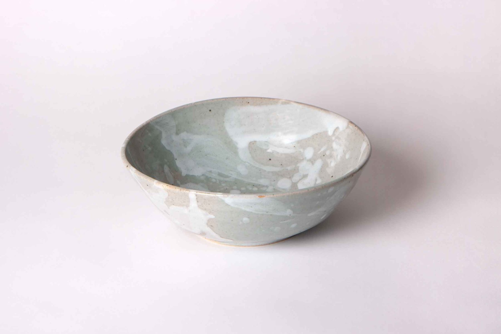
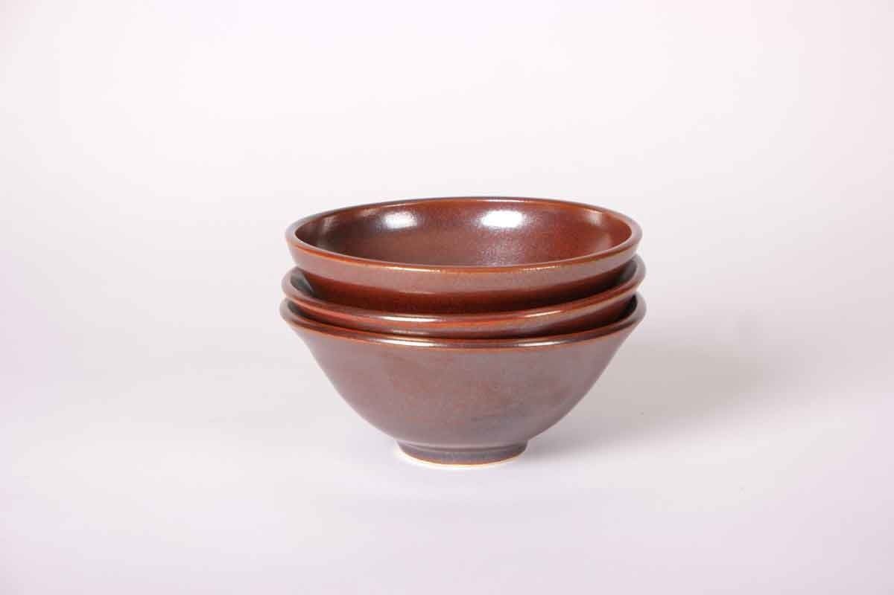
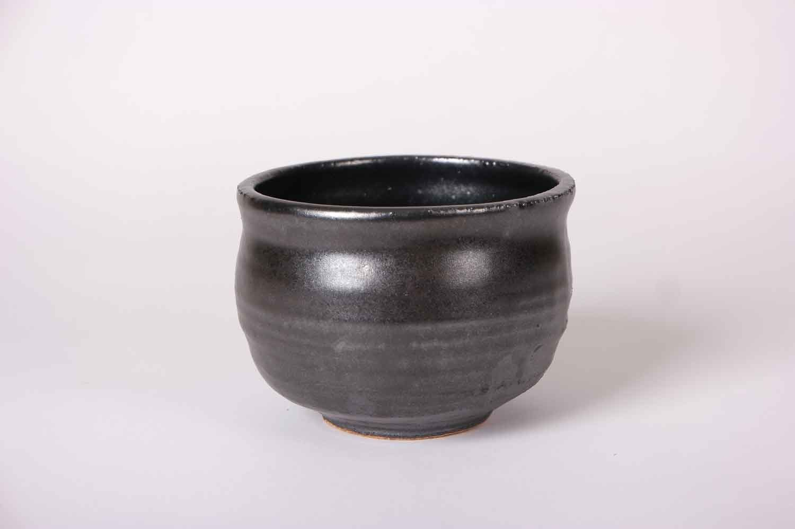

Skip to content
Charles Talbot Studio
Menu
Recent Work
Archives
About
Artist Statement
Instagram
Toshiko Takaezu Foundation
Tea Bowls, 2016
June 2016



← Vessels, 2016–2017
All work
Sculpture, 2025–2026 →